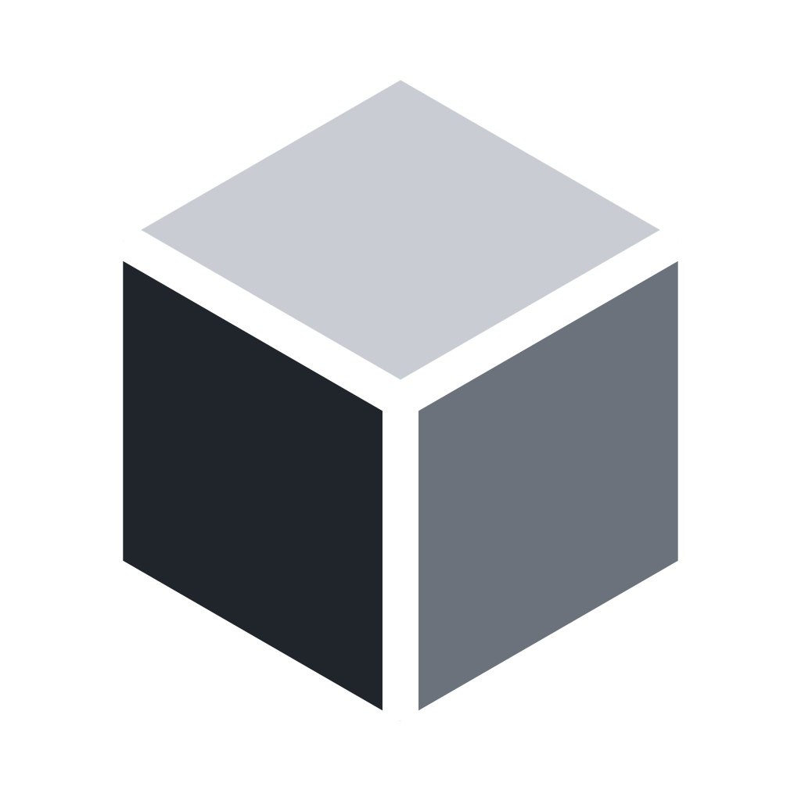
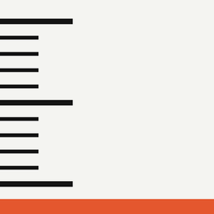

Y³ Studio꼭 필요한 한 가지를 잘하는 작은 앱
Y³ Studio는 일상과 현장에서 쓰는 아이폰 앱을 만듭니다. 광고가 없고, 개인정보를 수집하지 않습니다.
Peri곁눈으로 보는 속도계. 10 단위마다 바뀌는 색으로 속도를 알려 줍니다.

Edge Ruler아이폰 끝이 0인 축척 자와 기울기(각도·분수·퍼센트).

DIDIM설계 초기에 쓰는 계단 계산기. 단수·단높이·단너비와 개구부, 손스케치 평면·단면.

Starlog공부한 시간만큼 밤하늘의 별자리를 밝히는 집중 타이머.
English
Y³ Studio makes small iPhone apps that do one thing well. No ads, no data collection.
- Peri — a speedometer for the corner of your eye.
- Edge Ruler — a scale ruler that starts at the end of your iPhone, with slope in degrees, ratio and percent.
- DIDIM — a stair calculator for early design, with hand-drawn plan and section sketches.
- Starlog — a focus timer that lights up the night sky as you study.